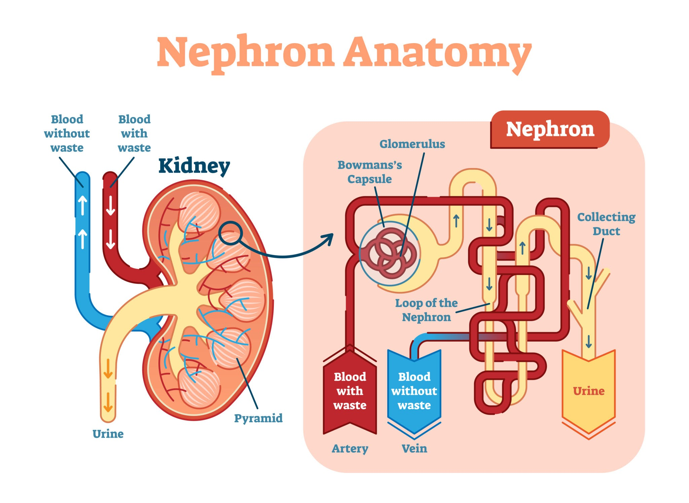

Executive Summary
 Dr. Nirmal Lamichhane
Dr. Nirmal Lamichhane
Dr. Nirmal Lamichhane stands as a prominent figure in the field of surgical oncology in Nepal, currently serving as a Senior Consultant Surgeon at the B. P. Koirala Memorial Cancer Hospital (BPKMCH). With a dedicated sub-specialization in Urological Cancers (Uro-Oncology), he has committed his career to the diagnosis, advanced surgical management, and comprehensive care of patients battling complex malignancies.
Possessing over two decades of robust surgical experience, Dr. Lamichhane combines academic excellence with clinical precision. He obtained his Magister Chirurgiae (M.Ch) in Urology from Kathmandu University, following a rigorous M.S. Surgical Oncology from the prestigious Fudan University in Shanghai, China. This unique educational background provides him with a comprehensive dual-perspective on general oncology and specialized urologic surgery.
His clinical acumen is further refined by extensive international training at some of the world's leading cancer centers. He was awarded the Saudavar Fellowship in Surgical Oncology at the renowned Memorial Sloan Kettering Cancer Center (MSKCC) in New York and the UICC ICRETT Fellowship at the H. Lee Moffitt Cancer Center in Florida. Additionally, he holds a Fellowship in Colorectal Surgery sponsored by the Royal College of Surgeons of Edinburgh (UK), reflecting his versatility in complex abdominal procedures.
Dr. Lamichhane’s expertise encompasses the full spectrum of genito-urinary tract tumors, including adrenal, renal, ureteric, bladder, prostate, and penile cancers. He is a pioneer in performing radical prostatectomies and radical cystectomies with intracorporeal diversions. He holds a particular authority in reconstructive urology, specifically the "Studer pouch neobladder reconstruction," a sophisticated procedure allowing bladder cancer patients to retain normal urinary function.
Beyond urology, Dr. Lamichhane retains deep proficiency in general oncological interventions, including mastectomies, colorectal surgeries, and complex lymph node dissections. As a former Chairman of the Board of Directors at BPKMCH, he also brings strategic leadership to the healthcare sector, driving advancements in cancer care infrastructure and patient advocacy in Nepal.
Leadership & Administration
Dr. Lamichhane has held pivotal governance roles at BPKMCH, shaping the institution's strategic direction:
- Chairman of the Scientific Committee: First National Oncology Conference (2004).
- Coordinator: Annual Report Publication Committee (2005–2008).
Clinical Expertise
- Genito-Urinary Tract Tumors: Specialized in Bladder, Prostate, and Kidney cancers.
- Surgical Procedures: TURP, TURBT, Radical Prostatectomy, Cystectomy.
- Reconstruction: Expert in Studer pouch neobladder reconstruction.
- General Oncological Surgery: Mastectomies, Colectomies, Penectomies, and Groin Dissections.
Credentials & Training
Education
- M.Ch (Magister Chirurgiae) in Urology: Kathmandu University, Nepal (2016).
- M.S. Surgical Oncology: Fudan University, Shanghai, China (2001).
- MBBS: Shanghai Medical University, China (1998).
International Fellowships
- Fellowship in Colorectal Surgery: Royal College of Surgeons of Edinburgh (UK) (2010–2011).
- Saudavar Fellowship in Surgical Oncology: Memorial Sloan Kettering Cancer Center (MSKCC), New York (2006).
- UICC ICRETT Fellowship: Sentinel Lymph Node Biopsy, H. Lee Moffitt Cancer Center, Florida (2003).
Research & Publications
Dr. Lamichhane is a prolific researcher with over 30 peer-reviewed publications and numerous oral presentations. His research interests have evolved from general surgical oncology to specialized onco-urology.
- Penile Cancer: Lymph node dissection techniques, staging systems, and surgical management.
- Prostate Cancer: "Salvage robot-assisted radical prostatectomy" and trans-perineal prostate biopsy.
- Bladder Cancer: "Orthotropic neobladder urinary diversion" and resection urethroplasty.
- Breast Cancer: Pioneered early research on Sentinel Lymph Node Biopsy in breast cancer patients in Nepal and China.
Consultation
Visit National City Hospital
For appointments and surgeries, please visit or contact the hospital reception directly.
National City Hospital (Private)
Hospital Road, Bharatpur-10, Chitwan